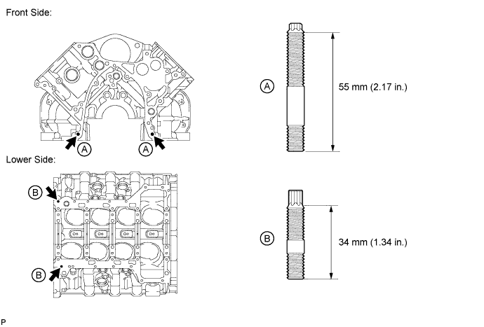
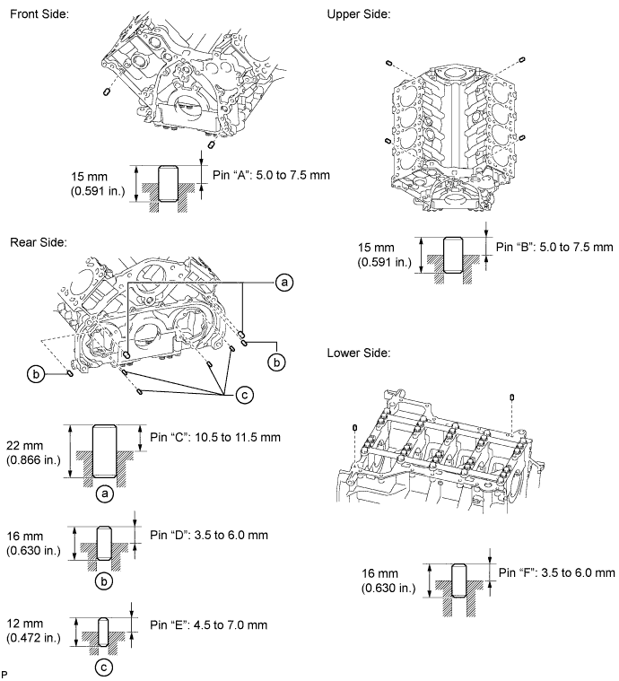
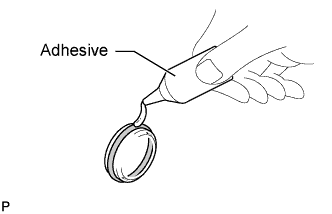
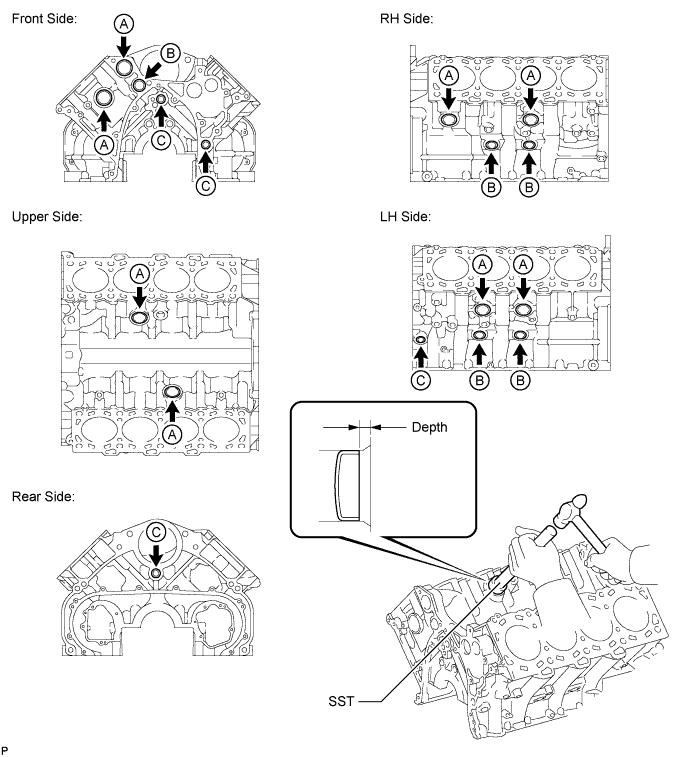
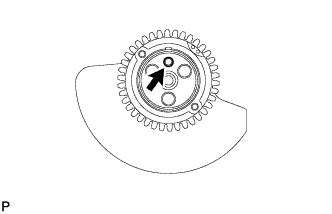

CYLINDER BLOCK > REPLACEMENT |
| 1. REPLACE STUD BOLT |
Using an E7 "TORX" wrench, replace the stud bolts labeled A shown in the illustration below.
Using an E8 "TORX" wrench, replace the stud bolts labeled B shown in the illustration below.

| 2. REPLACE STRAIGHT PIN |
Remove the straight pins.
Using a plastic-faced hammer, tap in new straight pins to the cylinder block.
| Item | Specified Condition |
| Pin "A" and "B" | 5.0 to 7.5 mm (0.197 to 0.295 in.) |
| Pin "C" | 10.5 to 11.5 mm (0.413 to 0.453 in.) |
| Pin "D" and "F" | 3.5 to 6.0 mm (0.138 to 0.236 in.) |
| Pin "E" | 4.5 to 7.0 mm (0.177 to 0.276 in.) |

| 3. REPLACE CYLINDER BLOCK TIGHT PLUG |
Remove the tight plugs.
 |
Apply adhesive around new tight plugs.
Using SST and a hammer, tap in the tight plugs to the specified depth.

| 4. REPLACE CRANKSHAFT STRAIGHT PIN |
 |
Replace the pin.